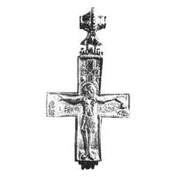
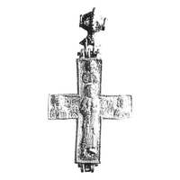

Catalog › CE-0863 · KOR2003-II.2.1.6
Encolpion întreg cu inel biconic turnat cu muchia crestată, relief magnific și inscripții clare
sec. prima pătrime XII (1101–1200) · Hmelnaia (lângă Kniaja Gora), ținutul Kanev, gubernia Kiev, Ucraina · Galeria Națională, Praga, inv. P 6502
double-sided reliquary cross (enkolpion), aramă; c. prima pătrime XII (1101–1200); found at Hmelnaia (lângă Kniaja Gora), ținutul Kanev, gubernia Kiev, Ucraina; kept at Galeria Națională, Praga.




Identificare
- Categorie
- Encolpion bivalv (relicvar)
- Material
- Aramă
- Tehnică
- Turnare în relief; Gravare (incizie)
- Stare
- Întreagă
- Dimensiuni
- Î 145 × L 78 mm
Iconografie
- Descriere avers
- Relief magnific și inscripții adâncite destul de clare. Valva de față: [І]ХС НСС ХСЪ.
- Descriere revers
- Valva de revers: ННК ОЛ[А]Є/ЛЄ/НА КОСТ.
- Inscripții
- [І]ХС НСС ХСЪ; ННК ОЛ[А]Є/ЛЄ/НА КОСТ
- Limba
- Slavonă
Datare și atribuire
- Datare
- sec. prima pătrime XII (1101–1200)
- Centru
- Necunoscut
- Tipologie
- Korzukhina–Peskova 2003, tip II 2 1
Descoperire
- Localitate
- Hmelnaia (lângă Kniaja Gora)
- Regiune
- ținutul Kanev, gubernia Kiev
- Țară
- Ucraina
- Context
- Descoperire izolată
Păstrare și referințe
- Colecție
- Galeria Națională, Praga
- Nr. inventar
- P 6502
- Bibliografie
- G. F. Korzukhina, A. A. Peskova, Древнерусские энколпионы. Нагрудные кресты-реликварии XI–XIII вв., Sankt-Petersburg, 2003 [Korzukhina–Peskova 2003], p. 85, cat. nr. II 2 1/6, reprodusă la Табл. 35 (planșe, p. 277). Bibliografie citată în sursă: Пуцко 1986, 170, рис. 2; Рисько 1986–1987, 52–54, 57; Рисько 1987a, 63–65; Hlaváčková 1993, 310–313.
- Figura
- Табл. 35
- Planșe
- Korzukhina–Peskova 2003, Табл. 35 (planșă fără paginație proprie în PDF; p. 277 tipărită)
- Observații
- Datare după Peskova: sec. prima pătrime XII. Circumstanțe: Descoperire din anii 1890, vândută atunci la Kiev, mai târziu la Praga. Proveniență în colecție: intrat la începutul anilor 1970 dintr-o colecție privată din Praga. Dimensiuni: h 14,5 cm cu inelul de agățare (după Hlavačková). Inelul de agățare este biconic, turnat, cu muchia decorată cu crestături. Foto după Hlavačková 1993. Gravarea nu e menționată. Coordonate: nu sunt date în sursă.
Citare: Corpus Encolpiorum, CE-0863, Encolpion întreg cu inel biconic turnat cu muchia crestată, relief magnific și inscripții clare, --root/piese/KOR2003-II.2.1.6/ (accesat 2026-10-17).